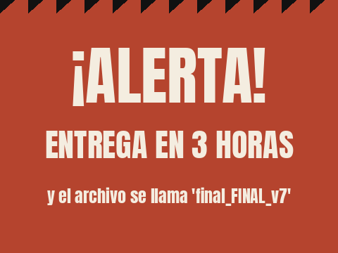
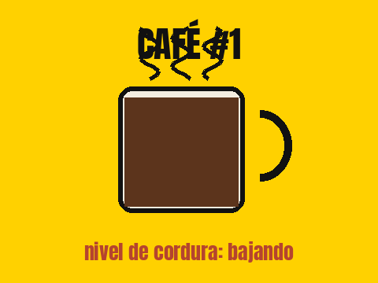
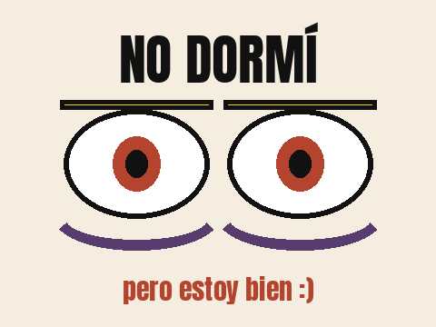
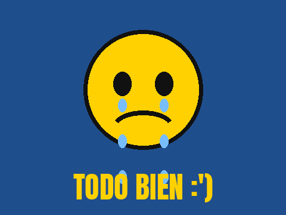
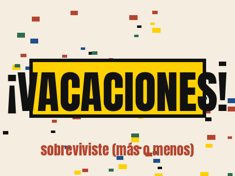

Duerme algo
Cuatro horas dormidas rinden más que ocho horas "estudiando" dormido sobre el teclado.
EDICIÓN ESPECIAL · FIN DE SEMESTRE · NO OFICIAL
Manual de supervivencia para sobrevivir (o al menos intentarlo) a la última semana del semestre en la Universidad de los Andes.

Es esa semana donde todos los profesores recuerdan, al mismo tiempo, que existen. Donde cinco entregas finales, tres parciales y un trabajo "sencillo" de último minuto deciden vivir en la misma agenda. Donde la felicidad de las vacaciones está a un paso… pero ese paso es una trinchera.
Este fanzine no te va a salvar la nota. Te va a hacer sentir acompañado, que es casi lo mismo. Léelo con café, sin dormir y con la pestaña del trabajo abierta en la otra ventana.
⚠ Aviso legal: este proyecto es un ejercicio académico no oficial de Taller Multimedia 1. No representa a la Universidad de los Andes ni reemplaza el apoyo de profesionales.


¿Estás oficialmente en semana 16? Marca lo que aplique. Sé honesto, nadie te juzga (todos están igual).
Mapa ilustrado (no oficial, no a escala, totalmente emocional) de los lugares donde vas a pasar la semana. Toca los puntos.


Guía de campo para identificar a tus compañeros en su hábitat natural. Toca una carta para ver su nivel de peligro.
* Todas las especies conviven en el mismo salón. Sé amable: tú también eres una.
Siete días, siete emociones, cero horas de sueño reales. Elige un día y mira cómo se ve el drama.
Abres la agenda, la miras fijamente y concluyes que "sí se puede". Hasta haces una lista con colores. Es el último momento de paz de tu vida.
"Esta semana me organizo bien."

Ciencia 100 % real (no). Ingresa tu semana y descubre tu probabilidad de llorar en la biblioteca.
Probabilidad de llorar en la biblioteca
Mueve los controles y presiona el botón. No te vamos a mentir (mucho).

Diccionario esencial para entender lo que dicen los profesores y lo que de verdad significa. Pasa el mouse o toca cada frase.
Arrastra los objetos indispensables hasta la mochila. Ojo: la mochila pesa menos que tus problemas.
Llorar es válido. Hacerlo con estrategia es mejor.

| Lugar | Discreción | Wifi | Veredicto |
|---|---|---|---|
| Baño del ML | ★★★★☆ | ★★★☆☆ | Clásico. Eco dramático incluido. |
| Biblioteca (piso silencio) | ★★☆☆☆ | ★★★★★ | Llorar en silencio es un arte. |
| Escaleras | ★★★★★ | ★☆☆☆☆ | Nadie te ve. Todos te han visto. |
| Cafetería | ★☆☆☆☆ | ★★★☆☆ | Mínimo mil testigos y un tinto. |
| Tu cuarto | ★★★★★ | ★★★★★ | Lujo total. Cobijita incluida. |
Debajo del sarcasmo hay algo real: esta semana pesa y está bien pedir ayuda. Algunas cosas que sí sirven:
Cuatro horas dormidas rinden más que ocho horas "estudiando" dormido sobre el teclado.
Escribe todo lo pendiente y atácalo por pedacitos. Menos pánico, más tachones.
Tus amigos, tu familia, tus profesores. Casi todos prefieren saberlo antes del colapso.
Agua, comida de verdad y diez minutos afuera. Tu cerebro es un órgano, no una máquina.
EPÍLOGO
(O vas a sobrevivir. O ya te rendiste con dignidad. Cualquiera de las tres opciones es válida.)

Respira. Se acabó. En unas horas el calendario va a estar vacío y tu único problema será decidir qué serie ver. Descansa, duerme de verdad y agradécele a tu yo del pasado… que probablemente no hizo nada.